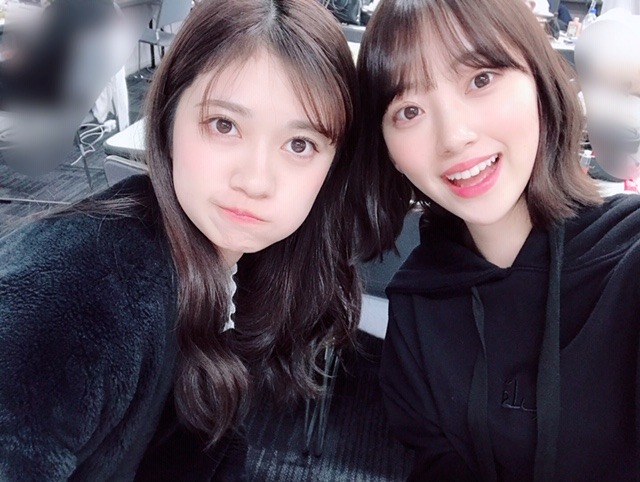

2019/0310Sun泡は苦かった
どうも！
金柑ってまるごと食べても美味しいけど
じゃあみかんは丸ごと食べちゃダメなのかな？
いまいちフルーツのどれが皮ごと食べてよくて
だめなのか把握できてません...
逐一、周りの人に聞いてから食べています。笑

紅白で着たこのドレス、色合いも形もどタイプです✨
かわいい衣装が着れて嬉しいなぁ
衣装さんに感謝感謝です

今日のパーカーはQALBの！
おっきめにきて フードをすっぽり被って楽屋でお昼寝をよくしてます。笑

パッション！らんぜたむ！
ザンビ絶賛放送中です✨✨
怖いかなー？？
でもなんだかんだ人が1番怖いなってホラー作品を観ると毎回思います、


吾輩は平和主義である〜
＼(^-^)／
あ、今日の乃木坂工事中で
私、フラれます。
疑似体験をしたら
こういうのすごくめんどくさそうだなって思ってしまったので私には向いてないですね〜
でもお芝居の中では全力で日村勇紀さんを引き止めますので！見てください✨
では
今日は寝る前に生ハム食べよーと
2019/03/10 19:54
コメント(476)
夜勤なので明日見ます( ˙꒳˙ )
握手会お疲れ様
工事中楽しみ！
工事中楽しみ！
いつもコメントゆったりしてて可愛いね。
個握絶対いきます！
個握絶対いきます！
こんばんはお疲れさま。
ザンビこっちでは放送がなくて(泣)
見たいけど残念や。
基本俺はホラー的なん苦手で(笑)
もうそろそろパーカーが大活躍する季節やね！
前にも書いたけど、色は紺色とオレンジ色。
でももう一色買うかな(笑)
何色にしようかな？
堀ちゃんのお薦めは何色かい？(笑)
あと平和主義大賛成ですよ！
ではではまたね！
握手会お疲れさま。
体調気をつけてくださいね！
ほなね、堀ちゃん。
ザンビこっちでは放送がなくて(泣)
見たいけど残念や。
基本俺はホラー的なん苦手で(笑)
もうそろそろパーカーが大活躍する季節やね！
前にも書いたけど、色は紺色とオレンジ色。
でももう一色買うかな(笑)
何色にしようかな？
堀ちゃんのお薦めは何色かい？(笑)
あと平和主義大賛成ですよ！
ではではまたね！
握手会お疲れさま。
体調気をつけてくださいね！
ほなね、堀ちゃん。
みおな応援してます！！乃木中見る！
未央奈、更新ありがとう！
今日は握手会お疲れさまでした。
ザンビ本編はものすごく怖いのに、写真の田舎町はのどかな感じがしていいね。
毎週欠かさず見てるよ。
蘭世との写真もありがとう。
今日はゆっくり休んでね。
今日は握手会お疲れさまでした。
ザンビ本編はものすごく怖いのに、写真の田舎町はのどかな感じがしていいね。
毎週欠かさず見てるよ。
蘭世との写真もありがとう。
今日はゆっくり休んでね。
ブログ更新ありがとう！
確かに紅白の時なまら可愛かったよ！
この年も乃木坂出ることを祈ります
今日の乃木中でフラれるのぉー？
僕なら絶対未央奈ちゃんのことフラない
あぁ〜とっても会いたいです
また北海道から握手会行きますね！！
したっけ〜〜
どさんこしゅーちゃん
確かに紅白の時なまら可愛かったよ！
この年も乃木坂出ることを祈ります
今日の乃木中でフラれるのぉー？
僕なら絶対未央奈ちゃんのことフラない
あぁ〜とっても会いたいです
また北海道から握手会行きますね！！
したっけ〜〜
どさんこしゅーちゃん
今日の全握行ったよ〜
可愛いかった〜
初めてで話してる時緊張のあまり噛んじゃったけど…
体調に気をつけてー
可愛いかった〜
初めてで話してる時緊張のあまり噛んじゃったけど…
体調に気をつけてー
今日の乃木中が楽しみでならないです！
堀さん、こんばんは。
紅白で乃木坂46が着ていたこの衣装、確かにすてきでした。色合いがウェッジウッドのジャスパーのティーカップのようで、ノーブルな雰囲気が佳きかな。
ドラマ版ザンビは絶賛放送中。ホラーとしての怖さもさることながら、友情や信頼といった、人の心に関係した部分がテーマとなっているところが考えさせられます。はたして実乃梨は聖を守ることができるのか。注目です。
『乃木坂工事中』までしばし待機中。先週に引き続き乃木坂46演技力チェックを楽しみにしています。
ではまたコメントします。
さらばだ、また会おう！（気球に乗って去りぬ～）
紅白で乃木坂46が着ていたこの衣装、確かにすてきでした。色合いがウェッジウッドのジャスパーのティーカップのようで、ノーブルな雰囲気が佳きかな。
ドラマ版ザンビは絶賛放送中。ホラーとしての怖さもさることながら、友情や信頼といった、人の心に関係した部分がテーマとなっているところが考えさせられます。はたして実乃梨は聖を守ることができるのか。注目です。
『乃木坂工事中』までしばし待機中。先週に引き続き乃木坂46演技力チェックを楽しみにしています。
ではまたコメントします。
さらばだ、また会おう！（気球に乗って去りぬ～）
まじ堀ちゃん半端ないって
だってむっちゃ可愛いもん。ずるいやんそんな可愛いの
更新ありがとうございます！
明日朝早いので乃木中リアルタイムで見ることは出来ませんが、録画で見ようと思います
その位の髪の長さ超タイプです！
(個人的にはその位かポニーがタイプです)
堀ちゃんのザンビの演技ぎ、最高です笑
もうすぐで終わっちゃうのが寂しいです....
今日は寝る前に堀ちゃんの動画を見て「明日の活力」に変えて頑張ろうと思います！
身体に気をつけて頑張ってください！
だってむっちゃ可愛いもん。ずるいやんそんな可愛いの
更新ありがとうございます！
明日朝早いので乃木中リアルタイムで見ることは出来ませんが、録画で見ようと思います
その位の髪の長さ超タイプです！
(個人的にはその位かポニーがタイプです)
堀ちゃんのザンビの演技ぎ、最高です笑
もうすぐで終わっちゃうのが寂しいです....
今日は寝る前に堀ちゃんの動画を見て「明日の活力」に変えて頑張ろうと思います！
身体に気をつけて頑張ってください！
可愛い〜
ミカンの皮は苦いけど、虫除けになるとは聞いたことある！
ホラーの鉄則だよね、バ◯オハザードのア◯バートさんとか13日の◯曜日のいじめっ子集団とか（笑）
ザンビ面白いよー！第2弾とかやって欲しいくらい(^^)
え、未央奈ちゃんをフるとか‥許すまじっ！！
ホラーの鉄則だよね、バ◯オハザードのア◯バートさんとか13日の◯曜日のいじめっ子集団とか（笑）
ザンビ面白いよー！第2弾とかやって欲しいくらい(^^)
え、未央奈ちゃんをフるとか‥許すまじっ！！
みおな〜、疲れてたけどブログみてちょっと元気でた！
忙しいはずなのにマメなみおなのファンで、わたしは幸せだなあといつも思う！ありがとう。
ザンビ楽しくみさせてもらってます。ホラー苦手なのでとても怖いけど、みおなのお芝居が好きだから頑張ってる！！結末まで見届けます。
忙しいはずなのにマメなみおなのファンで、わたしは幸せだなあといつも思う！ありがとう。
ザンビ楽しくみさせてもらってます。ホラー苦手なのでとても怖いけど、みおなのお芝居が好きだから頑張ってる！！結末まで見届けます。
やーい！みおな 前に愛媛のみかん農家の人に聞いたところ無農薬のところなら薄い皮のは完熟してれば食べれるそうですよ！！農薬使ってると皮についてるので皮は食べないほうがいいそうです！！レモンも完熟してると糖度高くて甘酸っぱくて皮ごと食べると少し苦味もあっておいしいんだよ！！！
前に愛媛のみかん農家の人に聞いたところ無農薬のところなら薄い皮のは完熟してれば食べれるそうですよ！！農薬使ってると皮についてるので皮は食べないほうがいいそうです！！レモンも完熟してると糖度高くて甘酸っぱくて皮ごと食べると少し苦味もあっておいしいんだよ！！！
ブログ更新ありがとう！
お昼寝、いいよね
握手会お疲れ様！
ゆっくり休んでね☺
お昼寝、いいよね
握手会お疲れ様！
ゆっくり休んでね☺
未央奈、更新ありがとう！
握手会お疲れ様！今回は行けなかったけど、
次回の握手会には行きます！その時はよろしくお願いします！
握手会お疲れ様！今回は行けなかったけど、
次回の握手会には行きます！その時はよろしくお願いします！
未央奈～～～ぁ。
フルーツの柑橘系はだいたいが、皮ごと食べれるんじゃないかい。
明日から会社なのでもう寝ます。乃木中は録画したので明日みるね♪(すみません)
3年A組終わっちゃったぁ。一番おもろいドラマだった。未央奈さんは何のドラマが一番好きでしたか？
では、では
フルーツの柑橘系はだいたいが、皮ごと食べれるんじゃないかい。
明日から会社なのでもう寝ます。乃木中は録画したので明日みるね♪(すみません)
3年A組終わっちゃったぁ。一番おもろいドラマだった。未央奈さんは何のドラマが一番好きでしたか？
では、では
演技上手かった！笑
ピーマンだけは笑った
ピーマンだけは笑った
平和ってなんやろね。
ただ、堀ちゃんがかわいくて私は毎日穏やかな気持ちで生きています。
ただ、堀ちゃんがかわいくて私は毎日穏やかな気持ちで生きています。
泡といえばback numberの泡と羊を思い出す。あ、僕も17日の個握でまたqalbのパーカー着ていきま〜す。
未央奈ちゃん、全握お疲れ様でした。
今回は、何事もなく無事終われた事を嬉しく
思います。まだ、なんとなくなんですけど
今年に入って間もないけど未央奈ちゃんは
充実している様に感じられます。
いっぱい努力をしてるかな～と、思ったりもして
バスラもあったからより早く感じるのかな（笑）
さて、今週は里帰りですね（笑）本当の
「味噌煮込み」も食べれるしね。
会いに行きますので、よろしくお願いします。
いつもありがとうございます。
体調管理には気を付けて下さいね。
心からの、お願いです。
今回は、何事もなく無事終われた事を嬉しく
思います。まだ、なんとなくなんですけど
今年に入って間もないけど未央奈ちゃんは
充実している様に感じられます。
いっぱい努力をしてるかな～と、思ったりもして
バスラもあったからより早く感じるのかな（笑）
さて、今週は里帰りですね（笑）本当の
「味噌煮込み」も食べれるしね。
会いに行きますので、よろしくお願いします。
いつもありがとうございます。
体調管理には気を付けて下さいね。
心からの、お願いです。
映画楽しみです
未央奈～、工事中、良い演技だったよ。
みかんは皮ごと食べれるよ。
渋いイメージしかないでしょ。
そのまま割って食べてみ、美味しいから( ´ー`)
みかんは皮ごと食べれるよ。
渋いイメージしかないでしょ。
そのまま割って食べてみ、美味しいから( ´ー`)
こんばんわ！！
いつもブログ更新ありがとー！！
住んでるとこ遠いから握手会とか全然いけないけど
いつか絶対会いにいく！
ずっと応援してます！
ではまた
いつもブログ更新ありがとー！！
住んでるとこ遠いから握手会とか全然いけないけど
いつか絶対会いにいく！
ずっと応援してます！
ではまた
未央奈握手会お疲れ様！
未央奈に初めて釣って貰えてめっちゃ嬉しかった
今日の事は一生忘れません！
ゆっくり休んでね
未央奈に初めて釣って貰えてめっちゃ嬉しかった
今日の事は一生忘れません！
ゆっくり休んでね
こんばんは！
自分もパーカー好きで普段からきてるので握手会でもパーカー姿みてみたいです！
自分もパーカー好きで普段からきてるので握手会でもパーカー姿みてみたいです！
みおな、こんばんは(^_^)
全握お疲れ様～(^o^)／
僕は、ミニライブを見て、生写真を買って帰りました。
握手に並ぶ時間が無かったからね～(^_^;)
みかんの皮って、漢方薬になるって知ってた？
陳皮（ちんぴ）って言う漢方薬になるんそうだよ。
色々な効能があるそうだよ(^_^)
工事中見たよ(^o^)／
みおなの目から涙が流れたのには驚いた！
流石だな～(^_^)
それじゃ、またね(^o^)／
全握お疲れ様～(^o^)／
僕は、ミニライブを見て、生写真を買って帰りました。
握手に並ぶ時間が無かったからね～(^_^;)
みかんの皮って、漢方薬になるって知ってた？
陳皮（ちんぴ）って言う漢方薬になるんそうだよ。
色々な効能があるそうだよ(^_^)
工事中見たよ(^o^)／
みおなの目から涙が流れたのには驚いた！
流石だな～(^_^)
それじゃ、またね(^o^)／
未央奈の演技とても上手だから見ていて楽しいです！これからも頑張ってください、応援してます！
17日の名古屋での個握行きます！！初めてなのでとても楽しみ〜
17日の名古屋での個握行きます！！初めてなのでとても楽しみ〜
ほりっぴ～、ナンチです♪
ブログ更新ありがとう～
ザンビ、毎回調査ビビりながら見てます
眼をめっちゃ細めないと見れない～
乃木中見たよ
演技派というか発想力がめっちゃスゴい
ピーマンの切り返し
ほりっぴ～のドラマ出演が待ち遠しい～
ホットギミックが早く観たい～
ブログ更新ありがとう～
ザンビ、毎回調査ビビりながら見てます
眼をめっちゃ細めないと見れない～
乃木中見たよ
演技派というか発想力がめっちゃスゴい
ピーマンの切り返し
ほりっぴ～のドラマ出演が待ち遠しい～
ホットギミックが早く観たい～
乃木中見たよ。
演技力ヤバかった
ホットギミック楽しみで～す
演技力ヤバかった
ホットギミック楽しみで～す
未央奈ちゃん！
お疲れ様です☺︎
ブログ更新ありがとう いつも楽しみにしてます！
乃木中めっちゃよかった！演技上手〜
お疲れ様です☺︎
ブログ更新ありがとう いつも楽しみにしてます！
乃木中めっちゃよかった！演技上手〜
未央奈ちゃん、こんばんは(^o^)/
岡山には皮ごと食べれるモンゲーバナナって言うのがあるよ( ＾∀＾)
リンゴは皮ごと噛ったりするけど梨は皮ごと食べるイメージ無いし、スイカも普通は皮食べないけど皮は漬け物にしたりしますよね( ＾∀＾)
みかん(オレンジ)も皮ごと食べないけど皮はマーマレードになるし、線引きが難しいですよね(^_^;)
ツーショット蘭世だったの？
誰か判んなかった(^_^;)
寝る前はあまり食べない方が良いと思うよ(・o・)
岡山には皮ごと食べれるモンゲーバナナって言うのがあるよ( ＾∀＾)
リンゴは皮ごと噛ったりするけど梨は皮ごと食べるイメージ無いし、スイカも普通は皮食べないけど皮は漬け物にしたりしますよね( ＾∀＾)
みかん(オレンジ)も皮ごと食べないけど皮はマーマレードになるし、線引きが難しいですよね(^_^;)
ツーショット蘭世だったの？
誰か判んなかった(^_^;)
寝る前はあまり食べない方が良いと思うよ(・o・)
未央奈～☆☆
紅白でこのドレスを着た未央奈、
もう本当に本当に綺麗だったなー
おかげで幸せな気持ちで新年を迎えることができたよ！
乃木坂工事中見たよー
あのスイッチの入り方が凄すぎて感動しちゃった。
あれは正に未央奈のスイッチだなって思った。
先週の別のシチュエーションでの瞬発力演技でもそうだけど
未央奈の役への入り方が凄くて、観てるとスッとその世界観に
引き込まれて、凄く見ごたえがあるんだよなー
そう思うと、ホットギミックが更に更に楽しみになってきたよ！
あ、ちなみに、今回フラれる理由になっていたことは
本当のことじゃないって分かってるから、
心配しなくていいよ～笑
紅白でこのドレスを着た未央奈、
もう本当に本当に綺麗だったなー
おかげで幸せな気持ちで新年を迎えることができたよ！
乃木坂工事中見たよー
あのスイッチの入り方が凄すぎて感動しちゃった。
あれは正に未央奈のスイッチだなって思った。
先週の別のシチュエーションでの瞬発力演技でもそうだけど
未央奈の役への入り方が凄くて、観てるとスッとその世界観に
引き込まれて、凄く見ごたえがあるんだよなー
そう思うと、ホットギミックが更に更に楽しみになってきたよ！
あ、ちなみに、今回フラれる理由になっていたことは
本当のことじゃないって分かってるから、
心配しなくていいよ～笑
未央奈～ こんにちは
ブログ更新ありがとうございます。
そして今日は全握・ミニライブ、おつかれさまでした。ものすごい人出だったようですが、今月はまだ名古屋も大阪もありますね。私は、月末の大阪に参戦したいと思います。前作は映画の撮影のため、お会いできなかったので、今度は、楽しみにしています。ぜひとも体調整えておいてくださいね。
さて、今日の工事中、楽しく見せていただきました。涙を流しての熱演、カッコよかったです。スイッチ入ると迫力ありましたよ。
６月の映画がホント楽しみになりました。
ブログ更新ありがとうございます。
そして今日は全握・ミニライブ、おつかれさまでした。ものすごい人出だったようですが、今月はまだ名古屋も大阪もありますね。私は、月末の大阪に参戦したいと思います。前作は映画の撮影のため、お会いできなかったので、今度は、楽しみにしています。ぜひとも体調整えておいてくださいね。
さて、今日の工事中、楽しく見せていただきました。涙を流しての熱演、カッコよかったです。スイッチ入ると迫力ありましたよ。
６月の映画がホント楽しみになりました。
堀ちゃんこんばんは！
ブログありがとうございます！(o^^o)
やっぱりザンビの堀ちゃんの感じもめちゃめちゃ大好きです〜、ほんっとに可愛い( ´ ▽ ` )♩
当然お顔もめちゃめちゃ可愛いですしポーズも両方可愛い〜、ほんとに全部ひっくるめてめっちゃ可愛い( ´ ▽ ` )
何度も同じ言葉で可愛い可愛い言ってごめんなさい、でもほんとに可愛すぎてとにかく可愛いと感じた想いを伝えたくて笑
明日から毎日仕事の合間に見て癒されようと思います、吾輩も平野主義である〜＼(^-^)／笑
そして堀ちゃんの笑顔もいつもめっちゃ好きなんですけど、時折見せてくれる口を開けて笑ってる写真もたまらなく可愛くて癒されます(*´ー｀*)
特にメンバーと映ってるときに多いですかね？
気の置けないメンバーと一緒にいる、リラックスした楽しそうな堀ちゃんの笑顔を見られると、なんだか妙に嬉しくなります(o^^o)
そしてそして乃木中も見ました！
ただただ凄いの一言です…！
堀ちゃんは入り込みが凄いですね、あんなにいきなり役に入り込めて、涙も流せて、プロだなぁと感じました…！
声の雰囲気とか、いつもの堀ちゃんのイメージからは想像できないトーンで、良い意味で別の人を見ているようでした(^^)
でも、堀ちゃん自身が料理苦手そうには見えてないですよ( ´ ▽ ` )笑
前から思ってましたが、堀ちゃんのブログってほんとに素敵さに溢れてるなぁと改めて(*´ー｀*)
まず何より堀ちゃんの書く文章も好きです、一つ一つの表現や次の話題に行くときの流れ方とか、含みを持たせない真っ直ぐな内容が読んでいて安心感もくっついた高揚感があります(o^^o)
写真もたくさん載せてくれて、色んな堀ちゃんが見られますし、ファンにとってこの上なく嬉しいです！
もちろん堀ちゃんのペースで大丈夫なので、これからも楽しみにしています( ´ ▽ ` )♩
もう春ですね〜、花粉は少々厄介ですが、暖かい空気と太陽の光を浴びれるのでやっぱり春はいいですねぇ( ´ ▽ ` )
堀ちゃんを応援できて楽しい冬でした、この春もお世話になりますので、よろしくお願いします(o^^o)♩
ではでは！またコメントさせてくださいー！
ブログありがとうございます！(o^^o)
やっぱりザンビの堀ちゃんの感じもめちゃめちゃ大好きです〜、ほんっとに可愛い( ´ ▽ ` )♩
当然お顔もめちゃめちゃ可愛いですしポーズも両方可愛い〜、ほんとに全部ひっくるめてめっちゃ可愛い( ´ ▽ ` )
何度も同じ言葉で可愛い可愛い言ってごめんなさい、でもほんとに可愛すぎてとにかく可愛いと感じた想いを伝えたくて笑
明日から毎日仕事の合間に見て癒されようと思います、吾輩も平野主義である〜＼(^-^)／笑
そして堀ちゃんの笑顔もいつもめっちゃ好きなんですけど、時折見せてくれる口を開けて笑ってる写真もたまらなく可愛くて癒されます(*´ー｀*)
特にメンバーと映ってるときに多いですかね？
気の置けないメンバーと一緒にいる、リラックスした楽しそうな堀ちゃんの笑顔を見られると、なんだか妙に嬉しくなります(o^^o)
そしてそして乃木中も見ました！
ただただ凄いの一言です…！
堀ちゃんは入り込みが凄いですね、あんなにいきなり役に入り込めて、涙も流せて、プロだなぁと感じました…！
声の雰囲気とか、いつもの堀ちゃんのイメージからは想像できないトーンで、良い意味で別の人を見ているようでした(^^)
でも、堀ちゃん自身が料理苦手そうには見えてないですよ( ´ ▽ ` )笑
前から思ってましたが、堀ちゃんのブログってほんとに素敵さに溢れてるなぁと改めて(*´ー｀*)
まず何より堀ちゃんの書く文章も好きです、一つ一つの表現や次の話題に行くときの流れ方とか、含みを持たせない真っ直ぐな内容が読んでいて安心感もくっついた高揚感があります(o^^o)
写真もたくさん載せてくれて、色んな堀ちゃんが見られますし、ファンにとってこの上なく嬉しいです！
もちろん堀ちゃんのペースで大丈夫なので、これからも楽しみにしています( ´ ▽ ` )♩
もう春ですね〜、花粉は少々厄介ですが、暖かい空気と太陽の光を浴びれるのでやっぱり春はいいですねぇ( ´ ▽ ` )
堀ちゃんを応援できて楽しい冬でした、この春もお世話になりますので、よろしくお願いします(o^^o)♩
ではでは！またコメントさせてくださいー！
ザンビ面白い。
バースデーライブと握手会お疲れ様でした。
バースデーライブと握手会お疲れ様でした。
未央ちゃん大好きです！！
工事中は楽しみにしてます！
フラれる堀ちゃんが見れるのは貴重だね（笑）
フラれる堀ちゃんが見れるのは貴重だね（笑）
何でこんなにブログ更新早いんですか？嬉しいじゃないですか笑
堀ちゃん
握手会お疲れ様でした
行きたいけど、日程が厳しくて暫く行けないのです…（4枚目アルバムのも行けなくて寂しいです）
だけと次のシングル出たら絶対行きます！
ザンビ毎週観てますよ
ザンビになってしまった、堀ちゃんを見てみたい気もあるけど堀ちゃんには最後まで生き残って欲しいです
もし現実で、堀ちゃん含む乃木坂のメンバーに噛まれてザンビになってもいいと思う人が中にはいるかもしれないですね（いくら何でも俺は嫌ですけどね笑）
7話の与田ちゃんに諦めないでとか私が守るというシーンはとても演技が上手くてよかったです
次回も楽しみにしてます
さっき乃木中観てましたけど、フラれる演技涙まで流してすごい演技力でした
なんでって怒ってるとこもリアルな感じが出てて心がざわつきました笑
映画の公開も楽しみにしてます
明日も頑張ろう！
ありがとうございました
握手会お疲れ様でした
行きたいけど、日程が厳しくて暫く行けないのです…（4枚目アルバムのも行けなくて寂しいです）
だけと次のシングル出たら絶対行きます！
ザンビ毎週観てますよ
ザンビになってしまった、堀ちゃんを見てみたい気もあるけど堀ちゃんには最後まで生き残って欲しいです
もし現実で、堀ちゃん含む乃木坂のメンバーに噛まれてザンビになってもいいと思う人が中にはいるかもしれないですね（いくら何でも俺は嫌ですけどね笑）
7話の与田ちゃんに諦めないでとか私が守るというシーンはとても演技が上手くてよかったです
次回も楽しみにしてます
さっき乃木中観てましたけど、フラれる演技涙まで流してすごい演技力でした
なんでって怒ってるとこもリアルな感じが出てて心がざわつきました笑
映画の公開も楽しみにしてます
明日も頑張ろう！
ありがとうございました
未央奈、相変わらず可愛いね。
乃木中も、面白かったよ。
さすが、涙の女王だったね。
寝る前に、生ハム…
いいねぇ。
じゃあ俺は、
寝る前に、
生ビールでも飲むとするよ。
季節の変わり目で、
体調を崩しやすいけど、
くれぐれも、
身体には気をつけてね。
乃木中も、面白かったよ。
さすが、涙の女王だったね。
寝る前に、生ハム…
いいねぇ。
じゃあ俺は、
寝る前に、
生ビールでも飲むとするよ。
季節の変わり目で、
体調を崩しやすいけど、
くれぐれも、
身体には気をつけてね。
未央奈ブログありがとう！
幕張握手会お疲れ様！
月末の握手会が楽しみ
待っててね～
自分はみかんの皮はむくね笑
幕張握手会お疲れ様！
月末の握手会が楽しみ
待っててね～
自分はみかんの皮はむくね笑
全握おつかれさま！
わたしはテスト期間で行けなかった ごめんね
ごめんね
乃木坂の衣装はほんとかわいいよね！すごくあこがれる
衣装のかわいさも乃木坂の魅力のひとつだと思うんだ
わたしはテスト期間で行けなかった
乃木坂の衣装はほんとかわいいよね！すごくあこがれる
衣装のかわいさも乃木坂の魅力のひとつだと思うんだ
未央奈〜全握お疲れ様〜(●´ω`●)
未央奈の所に行ったけど、何も喋れなくてひたすら頷く事になってしまいました ファンとして、乃木坂ファンとして恥をかいたと思う次第でございます。未央奈これからも、頑張ってね。応援してます。
未央奈の所に行ったけど、何も喋れなくてひたすら頷く事になってしまいました ファンとして、乃木坂ファンとして恥をかいたと思う次第でございます。未央奈これからも、頑張ってね。応援してます。
未央奈ちゃん大好き
ブログ更新ありがとう！
全握お疲れさま！
わたしは行けなかったけどみおちゃんが楽しめてたらいいな☺︎
おっきめパーカーいいよね〜！
みおちゃんにオススメされたぜんぶ展で売ってる白パーカー買ったから最近よく着てるの！
お気に入りになりました☺︎
ちなみにバレッタのヘアピンも買ったよ❤︎
ザンビやっぱり怖い〜
夜に見ると余計怖いから、毎回録画して昼間に見てる！笑
みおちゃんがたくさん出てるからなんとか最後まで見れそうだよ！
乃木中も見ました！
先週の放送分でも思ったけど、みおちゃん演技上手！！
さすが映画の主演選ばれるだけあるな〜って☺︎
テロップで涙の女王って出てたけどその通りだった！
あそこですぐ涙出てくるのはちゃんと役になりきってるからだもんね！
映画元から楽しみだったけど、今回の見てより楽しみになりました！
わたしも生ハム食べた〜い！笑
全握お疲れさま！
わたしは行けなかったけどみおちゃんが楽しめてたらいいな☺︎
おっきめパーカーいいよね〜！
みおちゃんにオススメされたぜんぶ展で売ってる白パーカー買ったから最近よく着てるの！
お気に入りになりました☺︎
ちなみにバレッタのヘアピンも買ったよ❤︎
ザンビやっぱり怖い〜
夜に見ると余計怖いから、毎回録画して昼間に見てる！笑
みおちゃんがたくさん出てるからなんとか最後まで見れそうだよ！
乃木中も見ました！
先週の放送分でも思ったけど、みおちゃん演技上手！！
さすが映画の主演選ばれるだけあるな〜って☺︎
テロップで涙の女王って出てたけどその通りだった！
あそこですぐ涙出てくるのはちゃんと役になりきってるからだもんね！
映画元から楽しみだったけど、今回の見てより楽しみになりました！
わたしも生ハム食べた〜い！笑
全握いったよぉ。未央奈と握手できて、幸せ。テレビの未央奈にも、ひきこまれるけど、リアル未央奈は、もう、抵抗出来ないよぉ。きっちり、はまりました。大好きです。
ザンビ、乃木中、ライブ、どの未央奈も、最高です。
ますます、引き込まれます。
ますます、引き込まれます。


佐々木希さんのショートカットも可愛いね。
みおたんと同じだ。
今田美桜ちゃんって、みおたんと同じ歳なんだね。
昨日の夕方から、鼻水、くしゃみが止まりません。
凄く辛いです。
みおたんはどうかな？
それでは健康第一で！
信州のミッキイでした！